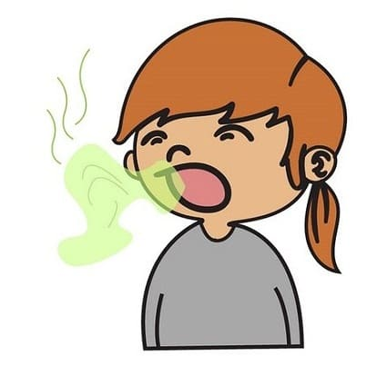
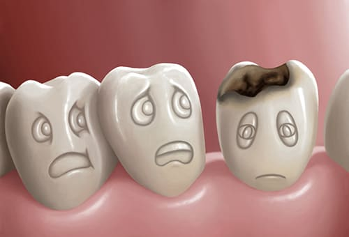

ЗЛОВОННОЕ ДЫХАНИЕ (ГАЛИТОЗ, НЕПРИЯТНЫЙ ЗАПАХ ИЗО РТА)

Хотя неприятным запах изо рта обычно просто помеха, а не болезнь, у него может быть причина, которую легко определить.
ПРИЧИНЫ
Семь самых распространенных причин зловонного дыхания в порядке убывания частоты:
- скопление слизи в носоглотке из-за простуды или воспаления пазух. По нашим наблюдениям одна из наиболее частых причин галитоза — воспаление носовых пазух. Жидкость собирается в них, как вода в отстойнике, и предоставляет питательную среду для бактерий. Поскольку бактерии живут и питаются в слизи, конечный продукт испускает отвратительный запах. Постоянный дурной запах изо рта должен заставить заподозрить хронический воспалительный процесс в носовых пазухах или миндалинах. Аллергический ринит также может сопровождаться зловонием изо рта;
- глубокие лакуны (ямки) в нёбных миндалинах, в которых собирается содержимое ротовой полости, назальная слизь и остатки пищи, образуя так называемые тонзиллолиты ;
- кариес;
- сухость во рту (ксеростомия): когда уменьшается естественное ополаскивание полости рта слюной, бактерии начинают интенсивно развиваться во рту, продуцируя дурнопахнущие газы. Поощряйте ребенка выпивать по меньшей мере 3—4 стакана жидкости в день;
- гастроэзофагальный рефлюкс;
- бактерии и выделения собираются в налете на спинке языка;
- инородное тело в носу.

Если ни вы, ни педиатр не нашли причину галитоза, отведите ребенка к стоматологу. Запах могут издавать зубной налет, остатки пищи и гнилые зубы.
|
ЧТО ДЕЛАТЬ
Плохой запах изо рта — подсказка, что надо нанести визит врачу, чтобы убедиться, что у ребенка нет воспаления носовых пазух или миндалин. До визита к врачу ведите дневник, где отмечайте, на что похож запах изо рта ребенка, как часто вы его замечаете, наличие каких-либо других симптомов (насморк, кашель, утомляемость, охриплость или осиплость голоса). Запах желудочного содержимого у детей с ГЭРБ более кислый и обычно наблюдается после отрыжки съеденным. Осмотрите полость рта на наличие остатков пищи, застрявших между зубов или в лакунах миндалин. Тонзиллолиты будут похожи на белый налет или желтый засохший гной . Вы также должны проверить язык. Используя пластмассовую ложку или зубную щетку, поскоблите спинку языка ребенка. Если налет пахнет так же, как дыхание ребенка, то, вероятно, это из-за носовой слизи или еды, скапливающихся на спинке языка.
ДОМАШНИЕ СРЕДСТВА
Параллельно с выявлением и лечением причины попробуйте:
- любимое средство доктора Сирса: «душ для носа» и «отпаривание»;
- маловероятно, что удастся научить ребенка полоскать горло, но его можно научить рычать. Дети старше четырех лет могут рычать с теплым солевым раствором (1/4 чайной ложки соли на 8-унциевый (примерно 200-граммовый) стакан воды) во рту. Годится и детский раствор для полоскания рта. Мы не советуем давать детям взрослые растворы для полоскания рта, так как они иногда содержат спирт, который дети могут проглотить;
- чистите язык зубной щеткой так глубоко, как получится;
- учите правильно чистить зубы. Покажите ребенку, как почистить зубы, чтобы удалить оттуда всех «сахарных жучков».
Здоровье ребенка от докторов Сирс / Сирс У. и др.